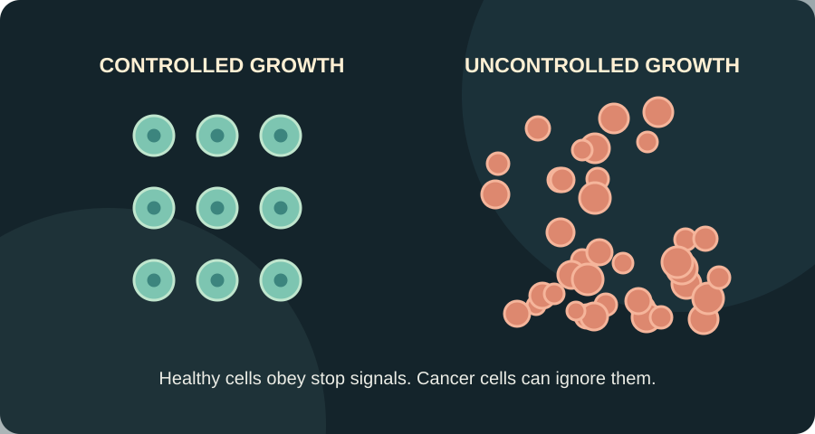

1. The beginning: Sidney Farber's unusual ambition (1947)
The chapter opens on a cold December morning in 1947, in a small, damp laboratory beneath Children's Hospital in Boston. Sidney Farber, a pediatric pathologist, is waiting impatiently for a package from New York. The package contains a yellow chemical called aminopterin. He hopes it might stop the growth of leukemia, a deadly form of cancer affecting children.
For nearly twenty years, Farber had studied diseased tissues under a microscope. His work included dissecting specimens, performing autopsies, identifying abnormal cells, and describing why children had died. He was highly respected in his field, yet increasingly dissatisfied: he could recognize cancer, but he could not help the children who were still alive. Pathology seemed to keep him in the basement among the dead while the actual patients suffered in hospital rooms above him.
Farber wanted to change his role. He would move from studying what cancer had already destroyed to testing whether a chemical might interfere with the living disease. That was an extraordinarily ambitious plan, because childhood leukemia was considered essentially untreatable. The package symbolizes the first step in that new direction.
2. Why leukemia was considered a hopeless disease
By the 1940s, doctors knew a surprising amount about the appearance of leukemia. They could draw blood, use a microscope, classify abnormal white cells, and give the disease increasingly precise names. Yet this knowledge offered almost no effective treatment. A child could arrive in a hospital, be studied in impressive detail, receive a blood transfusion, and then be sent home because the disease would continue to progress.
This is a central contrast in the chapter: medical understanding and medical power are not the same thing. Doctors might describe the enemy perfectly and still have no way to defeat it. To see how medicine arrived in this position, Mukherjee takes us backward to the first recognizable medical descriptions of leukemia in the nineteenth century.
3. John Bennett observes a mysterious illness (1845)
In March 1845, Scottish doctor John Bennett reported a case involving a 28-year-old slate-layer. The man had developed extraordinary fatigue, a swelling on the left side of his abdomen, recurrent fevers, bleeding, and enlarged glands. His spleen had become much bigger than normal. His condition worsened despite the treatments available at the time, and he died.
At the autopsy Bennett found an enormous number of white cells in the blood. He knew that white blood cells commonly appeared in pus and that pus was associated with infection. He therefore proposed that the man's blood had somehow turned into pus. He described the phenomenon as a suppuration of blood—that is, pus formation within the bloodstream.
But there was a serious flaw. Bennett searched the body for an infected wound or abscess and could not find one. His observation of excessive white cells was real; his explanation was wrong. The cells were not the consequence of a familiar infection. They were part of a malignant disease. Mukherjee uses this to show how a scientist may observe something important while interpreting it through an unsuitable existing idea.

4. Rudolf Virchow chooses to describe what he can see
A few months later, the German researcher Rudolf Virchow, only 24 years old, studied a middle-aged woman with a remarkably similar illness: an enlarged spleen and blood crowded with white cells. Virchow knew of Bennett's work, but the theory of blood spontaneously producing pus did not satisfy him. If this were a typical infection, where was the infection located?
Instead of claiming to know the cause, Virchow gave the condition a descriptive name: weisses Blut, or white blood. In 1847 he adopted the name leukemia, from the Greek root meaning white. The name seemed almost boring, but that was its strength. It did not pretend to explain what had not yet been demonstrated.
Mukherjee's deeper point is about intellectual humility. Virchow could say, in effect, “Here is what I observe. The explanation is still uncertain.” That opened the way for later discoveries rather than trapping the disease inside the wrong theory. Naming and classification can influence how generations of doctors think.
5. Virchow's cell theory changes medicine
Virchow became convinced that illnesses should be understood through the physical behavior of cells rather than through invisible forces or vague bodily imbalances. Earlier researchers, including Matthias Schleiden and Theodor Schwann, had shown the importance of cells as the building blocks of organisms. Virchow developed that insight into a way of thinking about human disease.
He stressed two principles: living tissues consist of cells, and new cells arise from existing cells. His famous Latin expression is omnis cellula e cellula. If tissues grow, that growth must involve some change in the cells themselves. Virchow distinguished two broad possibilities:
| Term | What happens | Easy example |
|---|---|---|
| Hypertrophy | Existing cells increase in size | Some muscle cells become bigger after training |
| Hyperplasia | Cells increase in number | Skin produces additional cells during repair |
Imagine ten balloons in a room. If each balloon becomes larger but there are still ten, that resembles hypertrophy. If the balloons remain small but you keep adding new balloons, that resembles hyperplasia. Both make the room feel more crowded, but by different mechanisms.
Virchow observed that cancers involved extreme, abnormal multiplication of cells. This was not simply ordinary tissue repair or growth. Cells seemed to have gained a drive to multiply that no longer obeyed the body's normal limits. He described this abnormal new growth with the term neoplasia. He did not yet know about DNA mutations, but he had identified cancer as a cellular problem.
6. How different cancers are connected
Breast tumors, cancers of the stomach or skin, lymphomas, and leukemia can look very different. Yet the chapter explains that they share something fundamental: malignant cells grow without normal regulation. Some produce solid masses called tumors; others, like leukemia, involve abnormal cells accumulating in the blood and bone marrow.
The chapter also introduces metastasis—the spread of malignant cells from an original site to distant organs. A cancer can begin locally and later affect bones, brain, liver, or lungs. This is why removing a visible lump does not necessarily eliminate a disease that has already spread.
Leukemia was a particularly revealing example because it did not need to form a large, visible lump. It could be thought of as cancer in a liquid form, with malignant blood-forming cells flooding the body's circulation and marrow. Once doctors recognized that these cells were multiplying abnormally rather than representing pus, leukemia finally fit into the broader family of cancers.
7. Acute, chronic, lymphoid, and myeloid leukemia
Over time, pathologists discovered that leukemia did not behave identically in every patient. Some cases advanced slowly, while others became fatal with astonishing speed. The terms chronic and acute helped distinguish these patterns. Acute leukemias often involve immature cells that multiply rapidly and interfere severely with normal blood production.
Doctors also classified acute leukemias by the affected blood-cell lineage. Acute myeloid leukemia (AML) arises in cells of the myeloid lineage; acute lymphoblastic leukemia (ALL) affects immature lymphoid cells. This matters because leukemia is not one uniform illness. Different types require different ways of understanding and, eventually, treating them.
In children, the chapter focuses on ALL. In the era before effective drugs, it was almost always fatal. The terminology made diagnosis more precise, but it did not yet solve the treatment problem.
8. Maria Speyer: A child's devastating illness (1860)
To show what acute childhood leukemia looked like, Mukherjee recounts the story of Maria Speyer, a five-year-old girl in Germany. Normally energetic and playful, she suddenly became lethargic, developed bruises, fever, and a stiff neck. Physician Michael Anton Biermer examined a drop of her blood using a small, candlelit bedside microscope and found enormous numbers of leukemia cells.
The case fascinated the doctors, who discussed the unusual microscopic findings. But Maria's illness was advancing faster than their discussions. She began vomiting blood, slipped into a coma, and died. The journey from recognizable symptoms to death had taken no more than three days.
The story exposes an uncomfortable gap between professional curiosity and personal suffering. To the doctors, the blood smear was a remarkable specimen. To the family, it was the devastating loss of a child. The author wants us to keep both realities in view when we read about medical discoveries.

9. Carla Reed: The science becomes a human story
After recounting the history, Mukherjee returns to Carla Reed, the thirty-year-old mother introduced in the Prologue. Her blood contained approximately 90,000 white cells in the count reported in the book, compared with a typical figure near 5,000 in the same measurement context. Around 95 percent were immature malignant blasts, not healthy immune cells.
White blood cells normally protect us from infections, but these blasts were not maturing into useful immune cells. This creates the paradox the author describes: a body flooded with white cells may still lack adequate immune defense. The problem was not merely that malignant cells were present; they were occupying space and disrupting the production of healthy blood.
Her bone marrow, normally a carefully organized factory for producing blood cells, had become packed with leukemia. Healthy red-cell production fell, reducing oxygen delivery and causing overwhelming fatigue and headaches. Platelet production also collapsed, explaining bruises and bleeding. The body could not function normally because the marrow's factory floor had been taken over.
| What went wrong | Effect on Carla |
|---|---|
| Too few red blood cells | Weakness, exhaustion, and reduced oxygen delivery |
| Too few platelets | Bruising and abnormal bleeding |
| Many immature leukemia blasts | Disruption of marrow organization and normal blood production |
| Too few functioning immune cells | Greater vulnerability to infections |
Treating her posed a frightening problem: chemotherapy might destroy malignant cells, but it would also damage some remaining healthy blood-forming cells. Doctors would have to push an already weakened biological system into a dangerous period of suppression in the hope that normal blood production could eventually recover.
10. Farber's education and restless ambition
Farber was born in Buffalo, New York, in 1903, the third of fourteen children in a hardworking Jewish immigrant family. Academic discipline was central to the household. His father expected the children to read difficult books and explain what they had learned. Farber studied biology and philosophy at the University of Buffalo, graduating in 1923, and supported himself in part by playing violin.
He studied medicine in Germany and continued at Harvard Medical School. He eventually became the first full-time pathologist at Children's Hospital in Boston. He developed an impressive reputation and wrote important material on pediatric tumors and autopsies. By the 1930s, he had established a distinguished career in pathology.
Yet his success intensified his dissatisfaction. His professional life centered on finding out what disease had done to patients after they died. He wanted to step beyond diagnosis and try to change what would happen to living patients. His choice of childhood leukemia was therefore both scientific and deeply personal.
11. Why choose leukemia rather than a common solid tumor?
Farber recognized a practical advantage that other doctors had overlooked: leukemia could be measured. In the 1940s, before CT and MRI imaging, doctors could rarely track the exact size of an internal solid tumor without surgery. A cancer hidden deep in the lungs or abdomen was difficult to monitor directly.
Leukemia, in contrast, produced abnormal cells that could be found in blood or bone marrow. If Farber gave a drug, he could repeat a blood test and count the malignant cells. A falling count would suggest the drug was having an effect; an increasing count might indicate failure. These measurements would not prove a cure on their own, but they could create an experimental basis for studying treatment.
For an illustrative example, imagine a patient whose abnormal cell count is 80,000. After treatment, it falls to 40,000 and then 15,000. Those figures would justify asking whether the drug suppressed the disease. Doctors would still need to examine toxicity, clinical improvement, remission, and relapse. The example is hypothetical, not a result from Farber's trial.
Farber hoped a relatively measurable cancer could teach lessons relevant to other, more complicated tumors. Scientists were increasingly using simpler systems to understand complex biology. He wanted leukemia to play that role in cancer medicine.
12. The package becomes a challenge to the future
The chapter returns to the small laboratory in December 1947. Farber finally opens the package of experimental chemicals. He cannot know whether the drug will work or what complications might appear. But he is doing something unusual: treating cancer as a problem that can be tested with measurable interventions.
The chapter's progression is important: observation → accurate description → understanding cells → measuring the disease → testing treatment. Bennett observed abnormal blood but misinterpreted it. Virchow named leukemia and helped locate disease at the cellular level. Farber tried to take the next step, changing the disease rather than merely describing it.
13. The deeper meaning of this chapter
The first lesson is that scientific knowledge and medical treatment are different achievements. Knowing what a disease is does not guarantee a way to stop it. Second, scientific humility matters: Virchow helped move the discussion forward by refusing to invent a cause unsupported by evidence. Third, diseases must be understood in living people, not only in diagrams and microscope slides. Maria's death and Carla's struggle prevent the science from becoming abstract.
Finally, Farber shows why measurement is so powerful. Without measurable results, treatment claims become matters of opinion. With careful observations, even a seemingly impossible problem can become a scientific experiment. Farber had not conquered leukemia, but he had identified a way to ask a new kind of question.
Chapter takeaway: The history of leukemia moves from identifying an unexplained excess of white cells to imagining that an experimental drug might alter their growth. The scientific shift is not yet a cure; it is the beginning of a testable approach to cancer treatment.